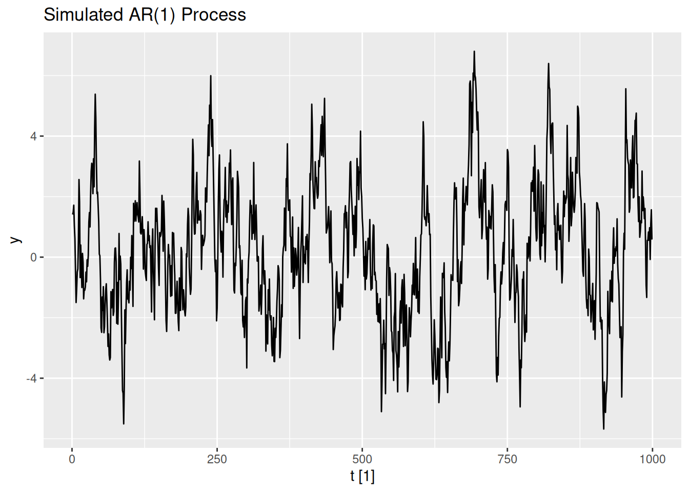
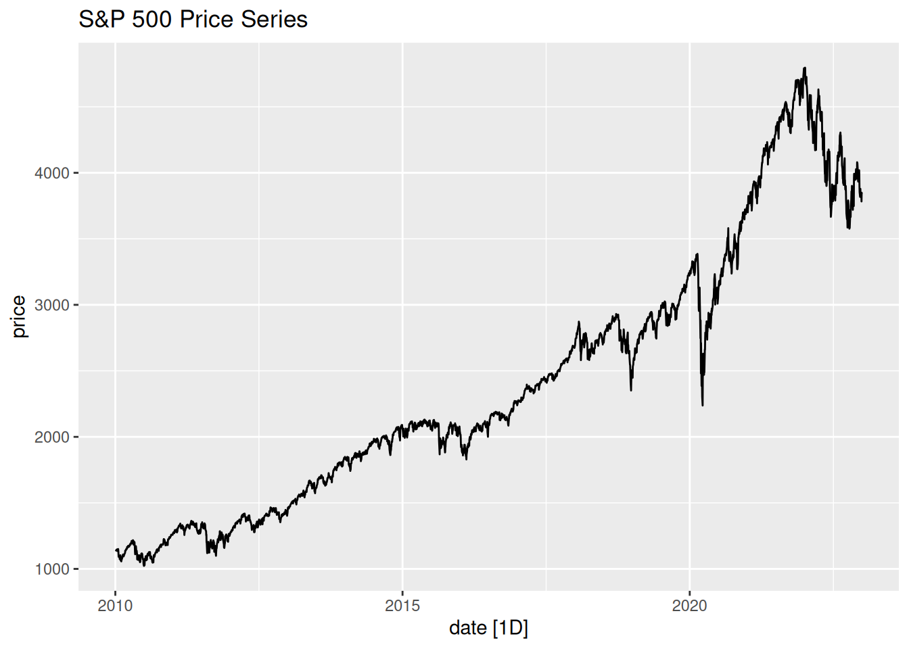

# Time Series Essentials, install if needed!
library(feasts) # Feature extraction & decomposition
library(fable) # Forecasting models (ARIMA, ETS, etc.)
library(fpp3) # Tidy time series dataseta
library(astsa) # Applied statistical TS methods from textbook
library(tseries) # Unit root tests & TS diagnostics
library(tsibbledata) # Curated TS datasets
library(quantmod) # Financial data retrieval
library(tidyquant) # Financial analysis in tidyverse
library(purrr) # Functional programming for TS pipelines
library(readr) # Efficient data importActivity6
Stationarity and Unit Root Tests
What is a Unit Root?
A unit root is a characteristic of a time series that makes it non-stationary. If a series has a unit root, it means that shocks to the system have a permanent effect, and the series does not revert to a long-term mean. Examples include random walks and random walks with drift.
Augmented Dickey-Fuller (ADF) Test
The ADF test is used to test for the presence of a unit root in a time series. The null hypothesis (\(H_0\)) is that the series has a unit root (i.e., it is non-stationary). The alternative hypothesis (\(H_1\)) is that the series is stationary. If the p-value from the ADF test is less than a significance level (e.g., 0.05), we reject the null hypothesis and conclude that the series is stationary.
KPSS Test
The KPSS test is another test for stationarity, but it has a different null hypothesis. The null hypothesis (\(H_0\)) for the KPSS test is that the series is stationary (around a deterministic trend). The alternative hypothesis (\(H_1\)) is that the series has a unit root (i.e., it is non-stationary). If the p-value is less than the significance level, we reject the null hypothesis and conclude that the series is non-stationary.
Key Differences Between ADF and KPSS Tests
-
Null Hypothesis:
- ADF: \(H_0\) = Series has a unit root (non-stationary).
- KPSS: \(H_0\) = Series is stationary (around a deterministic trend).
-
Interpretation:
- ADF: Rejecting \(H_0\) implies stationarity.
- KPSS: Rejecting \(H_0\) implies non-stationarity.
-
Use Case:
- ADF is more commonly used to test for unit roots.
- KPSS is often used as a complementary test to confirm stationarity.
Step 1: Simulate an AR(1) Process
# Simulate AR(1) process
set.seed(123)
n <- 1000
phi <- 0.9
ar1 <- tsibble(t = 1:n, y = arima.sim(model = list(ar = phi), n = n), index = t)
# Plot the AR(1) process
autoplot(ar1, y) + labs(title = "Simulated AR(1) Process")
# Perform ADF test
adf_test <- adf.test(ar1$y)
adf_test
Augmented Dickey-Fuller Test
data: ar1$y
Dickey-Fuller = -5.8012, Lag order = 9, p-value = 0.01
alternative hypothesis: stationary# A tibble: 1 × 2
kpss_stat kpss_pvalue
<dbl> <dbl>
1 0.195 0.1Step 2: Simulate a Random Walk with Drift
# Simulate Random Walk with Drift
set.seed(123)
n <- 100
drift <- 0.1
rw_drift <- tsibble(t = 1:n, y = cumsum(rnorm(n, mean = drift)), index = t)
# Plot the Random Walk with Drift
autoplot(rw_drift, y) + labs(title = "Simulated Random Walk with Drift")
# Perform ADF test
adf_test_rw <- adf.test(rw_drift$y)
adf_test_rw
Augmented Dickey-Fuller Test
data: rw_drift$y
Dickey-Fuller = -1.8871, Lag order = 4, p-value = 0.6234
alternative hypothesis: stationary# A tibble: 1 × 2
kpss_stat kpss_pvalue
<dbl> <dbl>
1 1.86 0.01Step 3: Interpret the Results
- AR(1) Process: The ADF test indicates stationarity (reject \(H_0\)), and the KPSS test indicates stationarity (fail to reject \(H_0\)) as well.
- Random Walk with Drift: The ADF test indicates non-stationarity (fail to reject \(H_0\)), and the KPSS test indicates non-stationarity (reject \(H_0\)) as well.
Step 4: Apply to Real-World Data (S&P 500 Prices)
# Get S&P 500 data in tidy format
sp500 <- tq_get("^GSPC",
from = "2010-01-01",
to = "2023-01-01",
get = "stock.prices") %>%
select(date, adjusted) %>% # Use adjusted closing prices
rename(price = adjusted) %>%
as_tsibble(index = date) # Convert to tsibble with date index
# Plot the S&P 500 series
autoplot(sp500, price) + labs(title = "S&P 500 Price Series")# Perform ADF test on the original series
adf_test_sp500 <- adf.test(sp500$price)
adf_test_sp500
Augmented Dickey-Fuller Test
data: sp500$price
Dickey-Fuller = -2.8302, Lag order = 14, p-value = 0.2268
alternative hypothesis: stationary# Perform KPSS test on the original series
kpss_test_sp500 <- sp500 %>%
features(price, unitroot_kpss)
kpss_test_sp500# A tibble: 1 × 2
kpss_stat kpss_pvalue
<dbl> <dbl>
1 30.1 0.01# Difference the series and perform ADF test
diff_sp500 <- sp500 %>% mutate(price = difference(price)) %>% tidyr::drop_na()
adf_test_diff_sp500 <- adf.test(diff_sp500$price)
adf_test_diff_sp500
Augmented Dickey-Fuller Test
data: diff_sp500$price
Dickey-Fuller = -15.29, Lag order = 14, p-value = 0.01
alternative hypothesis: stationary# Perform KPSS test on the differenced series
kpss_test_diff_sp500 <- diff_sp500 %>%
features(price, unitroot_kpss)
kpss_test_diff_sp500# A tibble: 1 × 2
kpss_stat kpss_pvalue
<dbl> <dbl>
1 0.0471 0.1Lab Activity
Repeat the stationarity and unit root analysis (using ADF and KPSS tests) for NVIDIA (NVDA) stock prices from 2010-01-01 to 2023-01-01. Apply differencing or other transformations as needed to achieve stationarity, and interpret the results.
Solution:
# Step 1: Get NVIDIA (NVDA) stock data
nvda <- tq_get("NVDA",
from = "2010-01-01",
to = "2023-01-01",
get = "stock.prices") %>%
select(date, adjusted) %>% # Use adjusted closing prices
rename(price = adjusted) %>%
as_tsibble(index = date) # Convert to tsibble with date index
# Step 2: Plot the NVIDIA stock price series
autoplot(nvda, price) +
labs(title = "NVIDIA (NVDA) Stock Price Series",
x = "Date",
y = "Adjusted Closing Price")
# Step 3: Perform ADF test on the original series
adf_test_nvda <- adf.test(nvda$price)
adf_test_nvda
Augmented Dickey-Fuller Test
data: nvda$price
Dickey-Fuller = -2.3584, Lag order = 14, p-value = 0.4266
alternative hypothesis: stationary# Step 4: Perform KPSS test on the original series
kpss_test_nvda <- nvda %>%
features(price, unitroot_kpss)
kpss_test_nvda# A tibble: 1 × 2
kpss_stat kpss_pvalue
<dbl> <dbl>
1 22.2 0.01# Step 5: Difference the series to achieve stationarity
diff_nvda <- nvda %>% mutate(price = difference(price))
# Step 6: Plot the differenced series
autoplot(diff_nvda, price) +
labs(title = "Differenced NVIDIA (NVDA) Stock Price Series",
x = "Date",
y = "Differenced Price")
# Step 7: Perform ADF test on the differenced series
adf_test_diff_nvda <- adf.test(na.omit(diff_nvda$price))
adf_test_diff_nvda
Augmented Dickey-Fuller Test
data: na.omit(diff_nvda$price)
Dickey-Fuller = -14.601, Lag order = 14, p-value = 0.01
alternative hypothesis: stationary# Step 8: Perform KPSS test on the differenced series
kpss_test_diff_nvda <- diff_nvda %>%
features(price, unitroot_kpss)
kpss_test_diff_nvda# A tibble: 1 × 2
kpss_stat kpss_pvalue
<dbl> <dbl>
1 0.0934 0.1